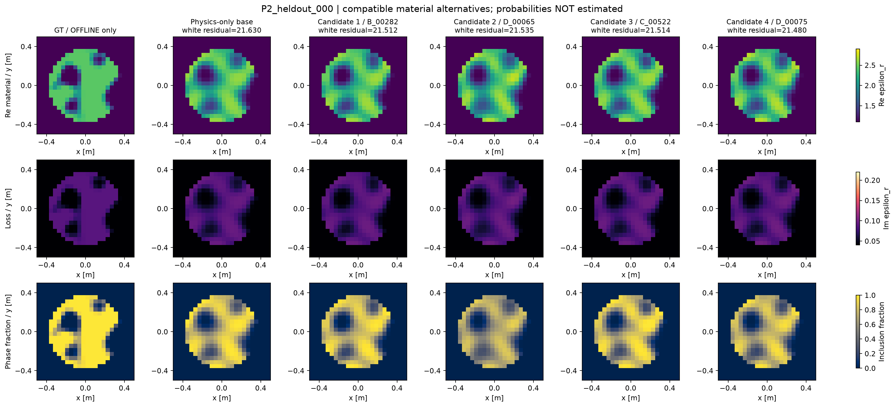
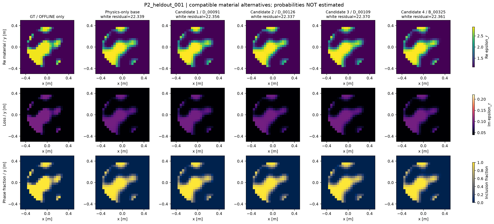
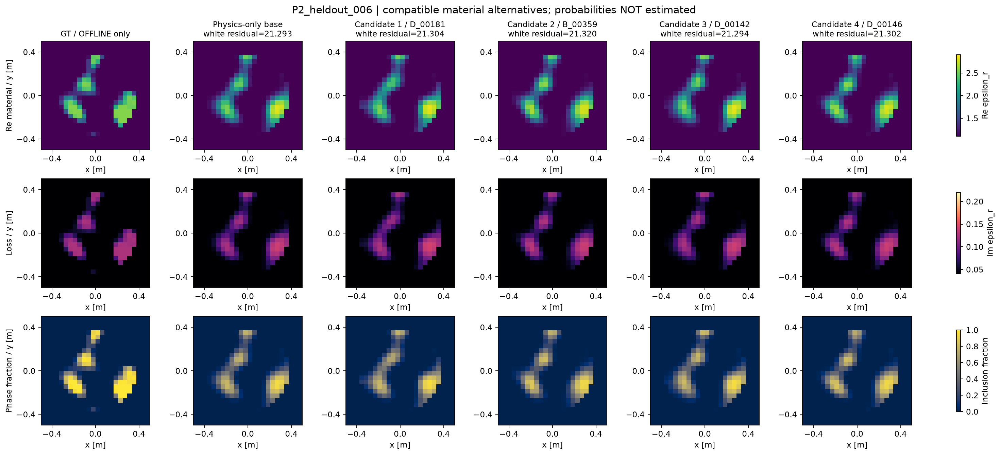
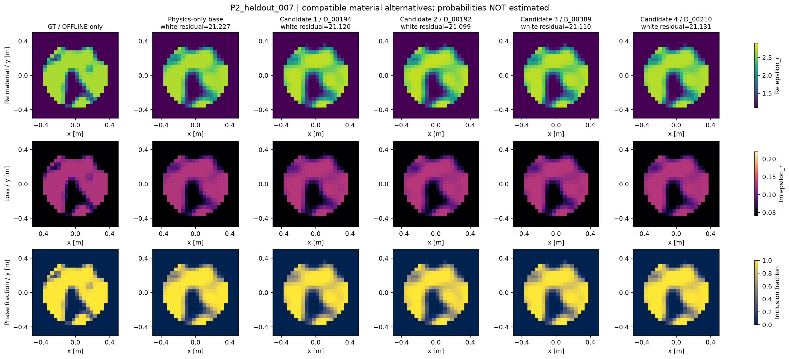
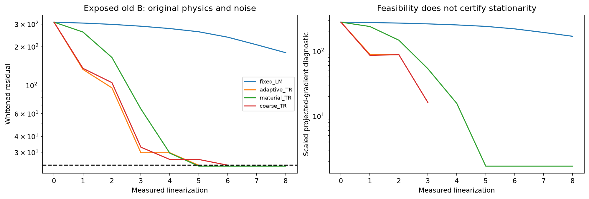
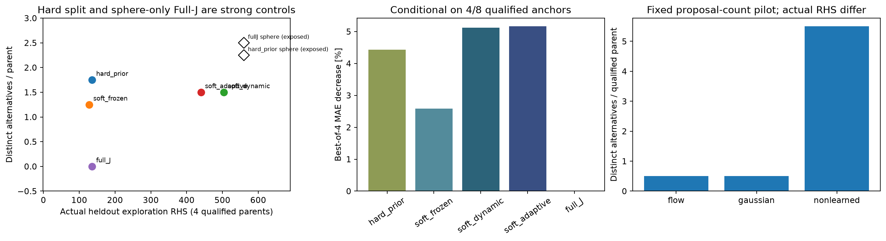
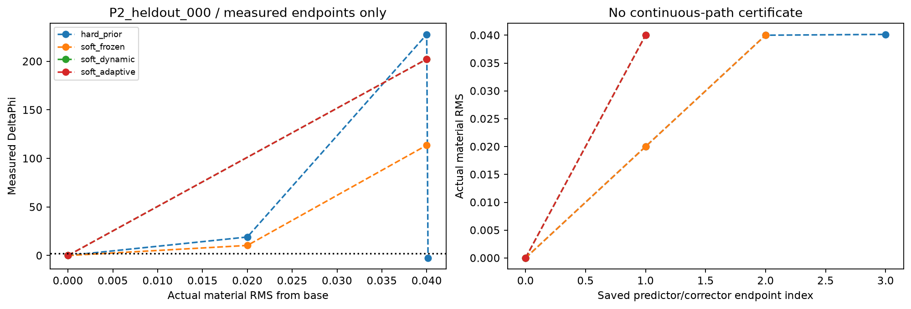
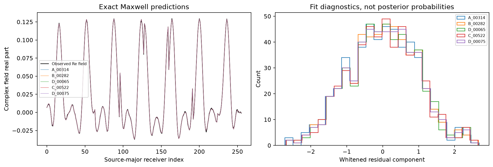
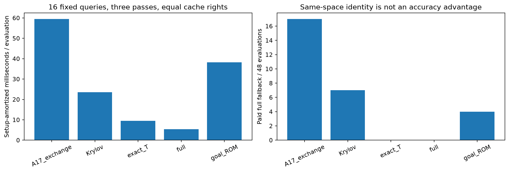

全部held-out：真值、基础解与候选
相同材料色标；GT只用于离线评分。不合格base明确标INVALID，不展示为合格候选。候选不等于posterior模式。
P2_heldout_000

从左到右：GT（仅离线评分）；coarse_TR基础解；hard_prior / B_00282；nonlearned / D_00065；soft_adaptive / C_00522；nonlearned / D_00075。前三行依次为材料实部、损耗和材料fraction。
机器可读候选及完整物理prediction引用
P2_heldout_001

从左到右：GT（仅离线评分）；coarse_TR基础解；nonlearned / D_00091；nonlearned / D_00126；nonlearned / D_00109；soft_dynamic / B_00325。前三行依次为材料实部、损耗和材料fraction。
机器可读候选及完整物理prediction引用
P2_heldout_006

从左到右：GT（仅离线评分）；coarse_TR基础解；nonlearned / D_00181；hard_prior / B_00359；nonlearned / D_00142；nonlearned / D_00146。前三行依次为材料实部、损耗和材料fraction。
机器可读候选及完整物理prediction引用
P2_heldout_007

从左到右：GT（仅离线评分）；coarse_TR基础解；nonlearned / D_00194；nonlearned / D_00192；soft_frozen / B_00389；nonlearned / D_00210。前三行依次为材料实部、损耗和材料fraction。
机器可读候选及完整物理prediction引用
optimizer_B

PDFcost_accuracy_discovery

PDFmeasured_transport

PDFforward_predictions

PDFacceleration

PDF